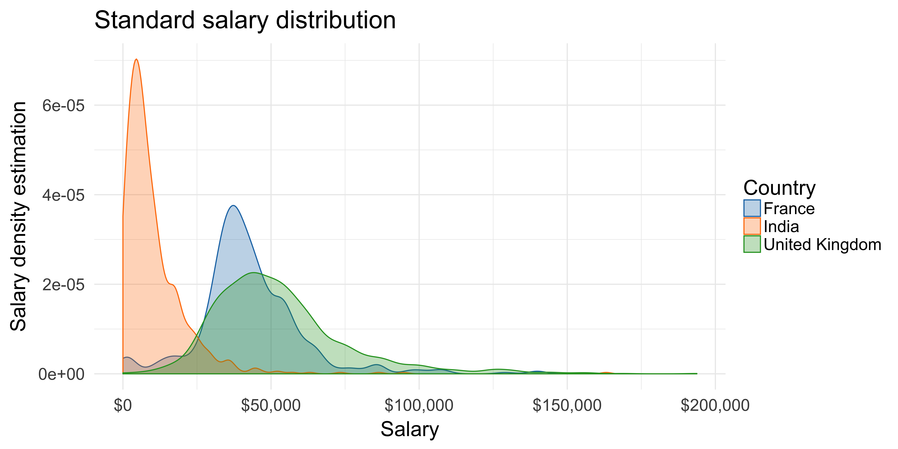
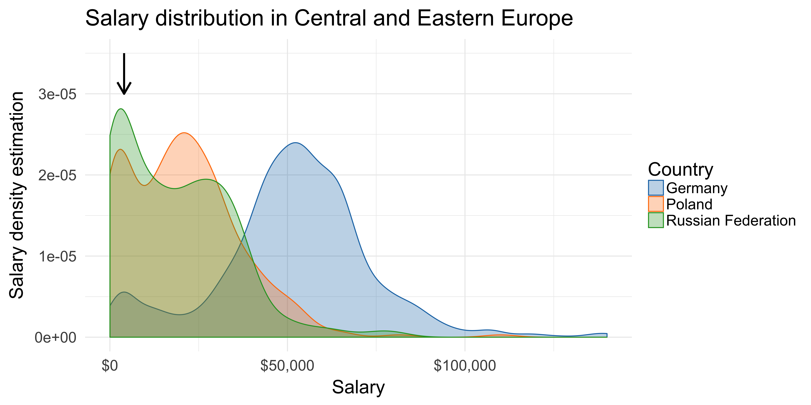
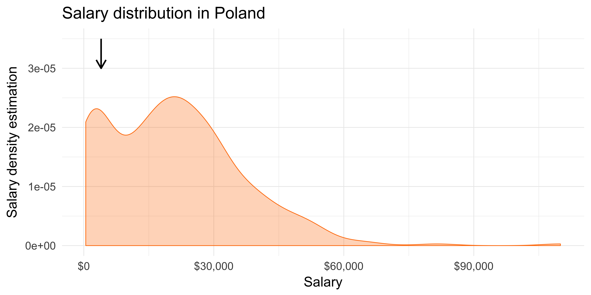
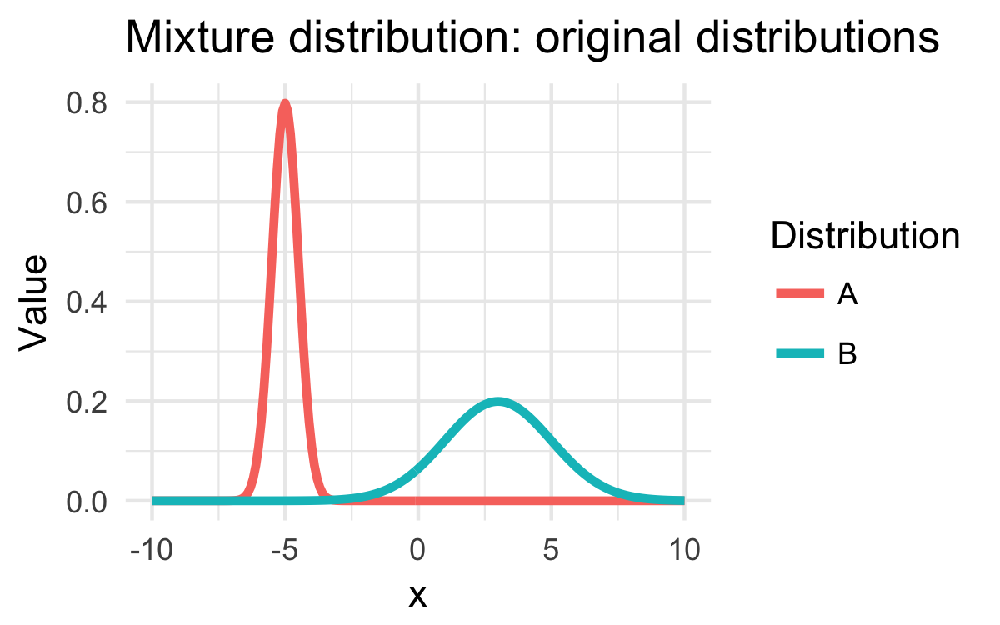
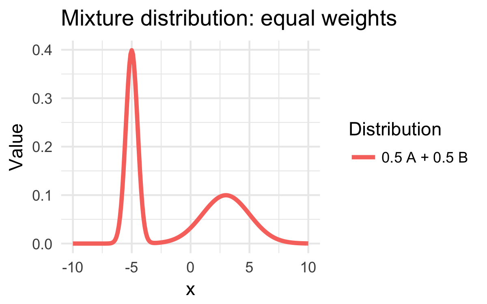
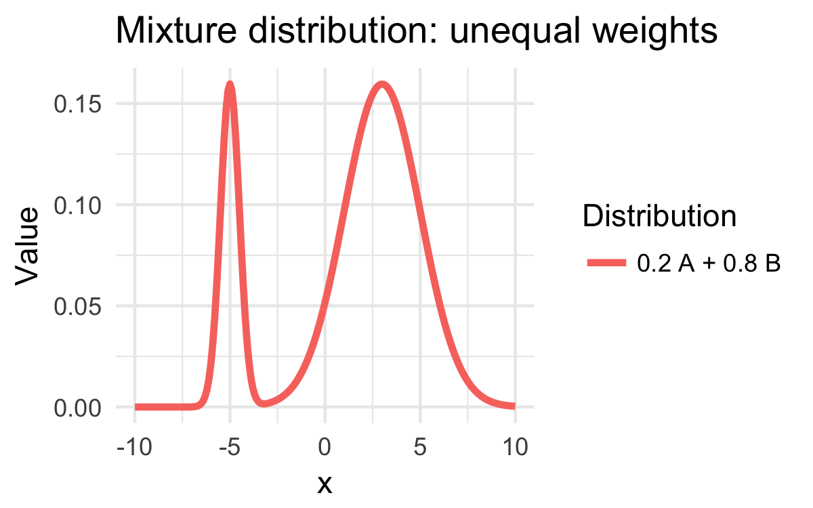
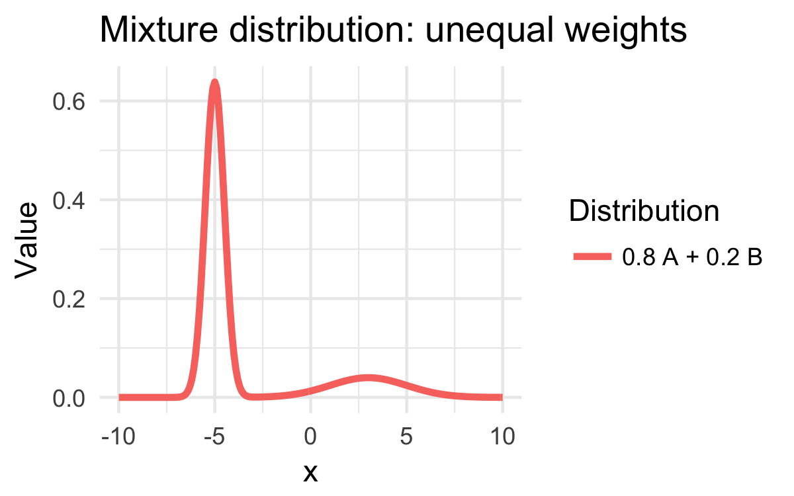
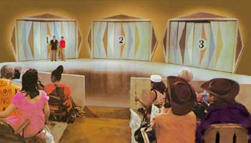
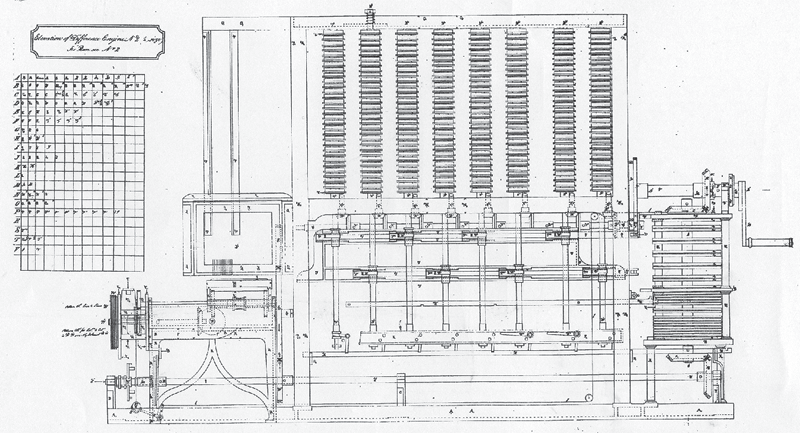

val salary : int
Full name: index.salary
Full name: index.salary
val mistake : bool
Full name: index.mistake
Full name: index.mistake
val observed : int
Full name: index.observed
Full name: index.observed
How to look like a statistician
A developer's guide to probabilistic programming
Evelina Gabasova
@evelgab

Probabilistic programming
Probabilistic models
Salary distribution




What's wrong?
What is your current annual salary, in [local currency]? Please enter a whole number in the box below, without any punctuation. If you prefer not to answer, please leave the box empty/blank.

Theory
People reported their monthly salary
Mixture distributions




Probability distributions
in probabilistic programming
Mixture distribution: formally
\[\text{Salary} = p \; \mathcal{N}\left(\mu, \sigma^2\right) + \left(1-p\right) \; \frac{1}{12} \; \mathcal{N}\left(\mu, \sigma^2\right)\]
unknown: \(\mu\), \(\sigma^2\), \(p\)
?
Sampling
Sampling: example
Monty Hall problem
Monty Hall problem
Demo
Monte Carlo sampling
Sampling
for mixture distributions
Easy if we knew the values of the unknown parameters
Mixture distributions: sampling
1: 2: 3: 4: 5: 6: 7: 8: |
|
Demo
Modelling probability distributions with computation expressions
Sampling
for mixture distributions
But how do we get the parameters?
The world's slowest probability inference engine

complete enumeration
Demo
The world's slowest probabilistic language
Probabilistic programming
in the real world
Evelina Gabasova@evelgabevelinag.com |